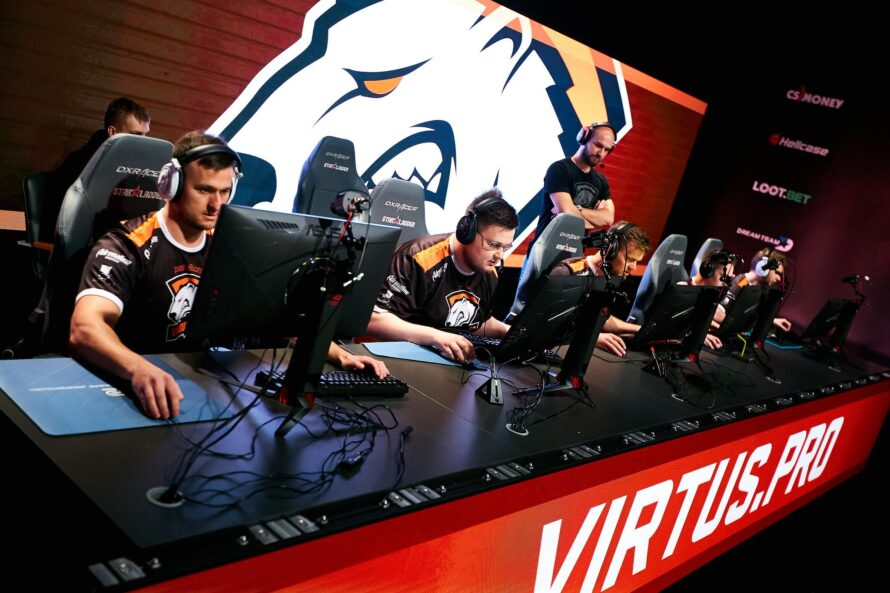

E-sport
E-sport
E-sport- forma rywalizacji, w której przedmiotem działań zawodników są gry komputerowe. Zawody e-sportowe często przyjmują formę zorganizowanej wieloosobowej gry komputerowej, gdzie zawodowi gracze prowadzą rozgrywkę indywidualnie lub w drużynach, zebrani fizycznie (tzw. LAN party) lub przez Internet. Mimo tego, że zawody i inne formy rywalizacji stanowią od dawna część kultury gier komputerowych, przez dłuższy czas były traktowane jedynie rozrywkowo, rozgrywane przez amatorów. Dopiero wraz z początkiem lat 2000, dzięki możliwości strumieniowania rozgrywek na żywo, zaczęły nabierać obecnej formy wraz z gwałtownym wzrostem ich popularności.
